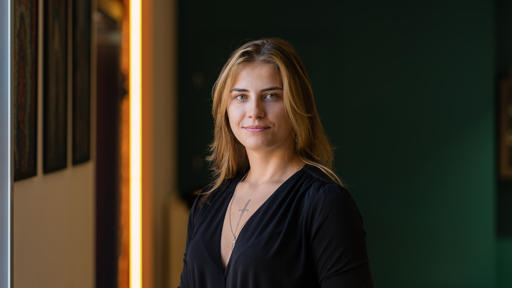
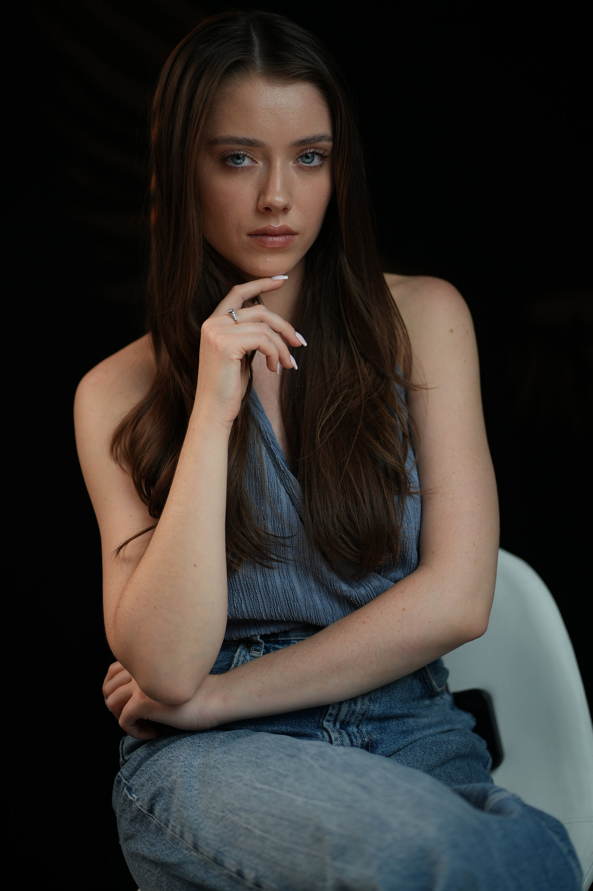
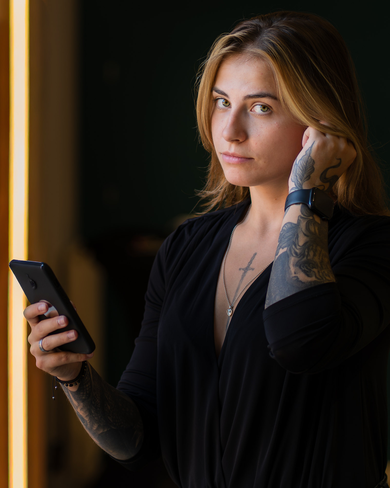
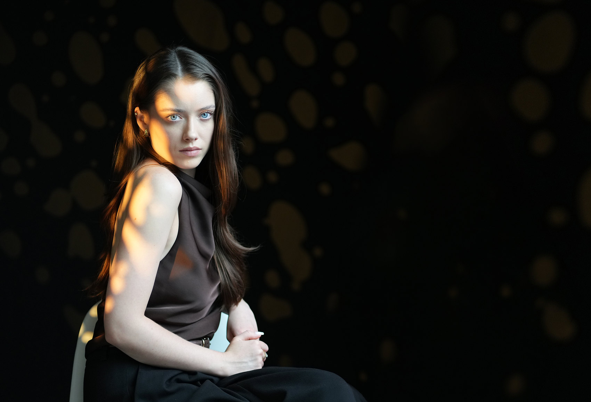
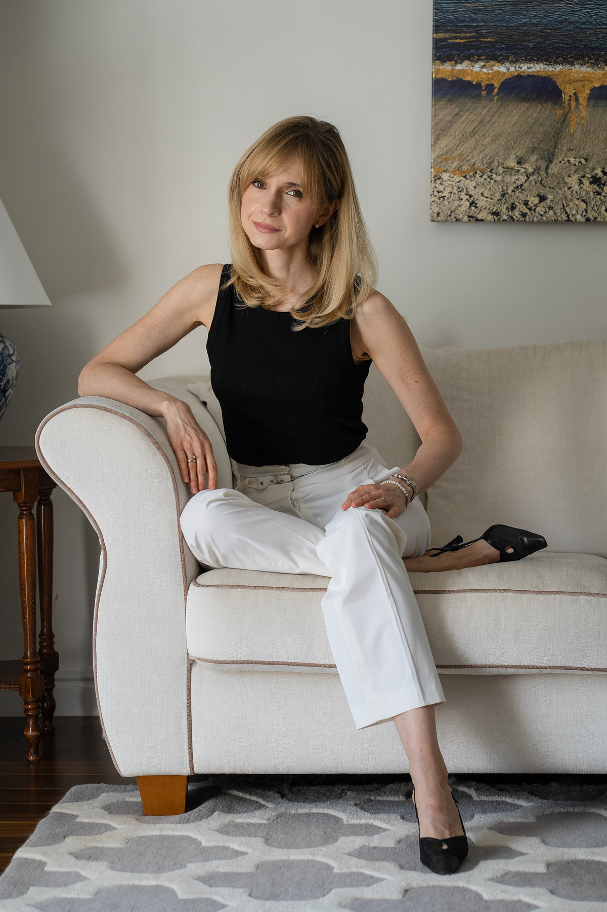
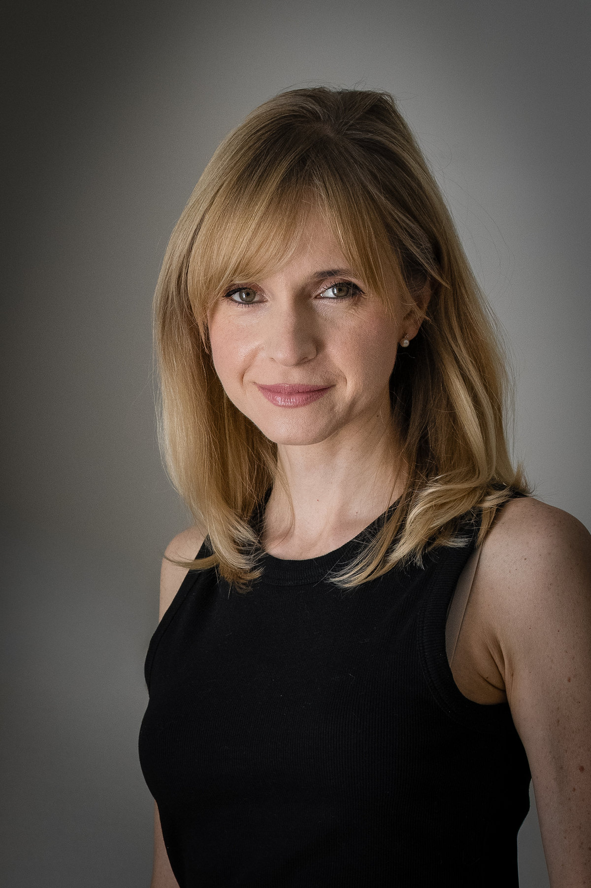
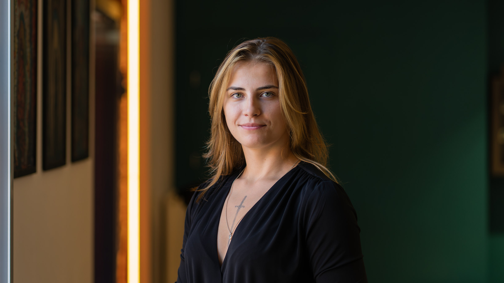
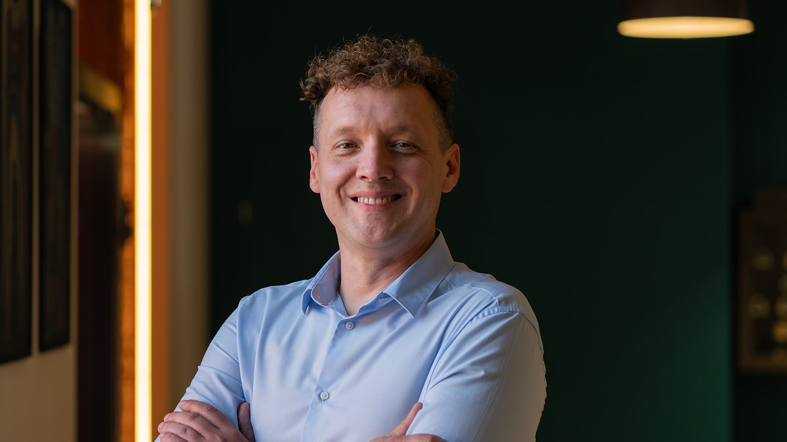
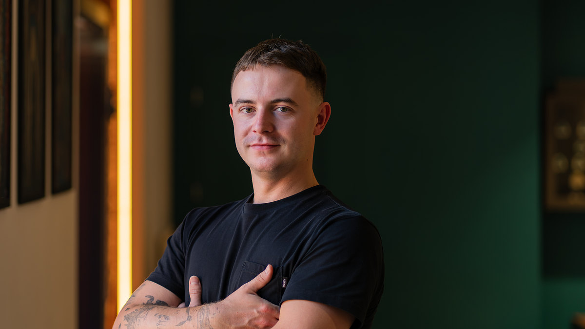

Ktoś zobaczy Twoje zdjęcie, zanim spotka Ciebie.
Każdy portret przygotowuję indywidualnie, na zamówienie: pod Twój charakter i cel, który chcesz osiągnąć.
01Cel
Zdjęcie idzie na spotkanie pierwsze. Pytam, dokąd i do kogo.
Ktoś, kto Cię nie zna, wyrobi sobie z niego zdanie, a potem porówna je z Tobą na żywo. Od odpowiedzi zależy, jak je zrobię.
Kadr
Format zależy od miejsca: profil to kwadrat, oferta poziom.
Perspektywa
Wysokość aparatu, czyli jak widz ma na Ciebie patrzeć.
Rekwizyty i środowisko
Twoje biuro i rzeczy, z którymi pracujesz. Albo czyste tło.
02Wrażenie
Na pierwsze wrażenie z twarzy wystarcza jedna dziesiąta sekundy.
Tak pokazało badanie psychologów z Princeton z 2006 roku. A różne zdjęcia tej samej osoby budzą różne wrażenia.

03Światło
Światło bywa ustawione. Człowiek w nim jest prawdziwy.
Dobieram je dopiero po rozmowie z Tobą.

Gdy wnętrze ma wyglądać tak jak na co dzień.

Gdy takiego światła nie ma i trzeba je zrobić. Te plamy to reflektor, nie słońce.
04Kadr
Szeroko widać miejsce. Blisko widać Ciebie.
Na obu zdjęciach ta sama osoba. Kadr zmienia to, co widać wokół niej, a nie ją.


05Zespół
Jedno światło dla całego zespołu. Każdy wygląda po swojemu.
Klient, który potem przyjdzie do biura, spotka tych samych ludzi, których widział na stronie.



Wszystkie trzy 85 mm · 1/250 s · to samo miejsce i to samo światło